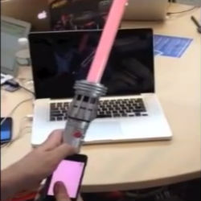
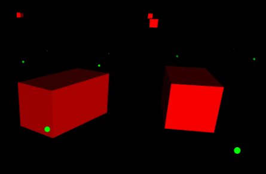
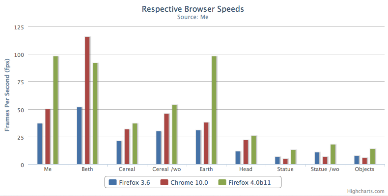

Bright Screen

I recently created a Virtual Reality Movie Theatre demo during a hackathon at work. It was a really fun week. I had to learn Unity, the Leap Motion SDK, and the Oculus Unity SDK.
My Time At Brass Monkey
This November 1st was my last day at my startup Brass Monkey. I wanted to write a nice goodbye and recap some highlights of my time at Brass Monkey as CTO.
Light Saber Controller
Last week we went to the Hasbro Hackathon, it was a ton of fun. Brass Monkey formed a team and our main entry was a cool multi-player music timing game. The more interesting part though was having access to a bunch of 3D printers and making a cool prototype using them.
Michael Arrington, Paul Graham, and Emotely

Emotely was called up to talk to Paul Graham and Michael Arrington for 'Office Hours' at Techcrunch Disrupt. Unfortunately, we were not there to receive that advice...
Couch Multiplayer Presentation
Here are the original slides for the talk on 'Couch Multiplayer' I gave at a recent Node.js meetup.
The talk is about what the PC experience is missing relative to video game consoles and your tv/video watching setup? PCs are missing: standardized controllers, the comfort of the couch, non-networked multiplayer, and innovative input methods.
Cube Racer
Check out this simple Javascript racing prototype. Of course, please first read the control scheme below.
Firefox4 is rendering this demo the fastest
I was recently testing out Firefox4 beta. It has made huge strides in Javascript performance. It runs my old Normal Mapping demos much faster than in other browsers.